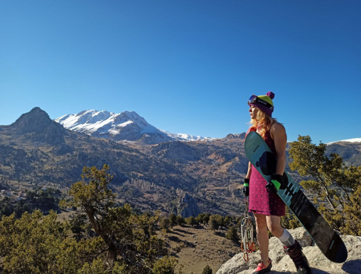
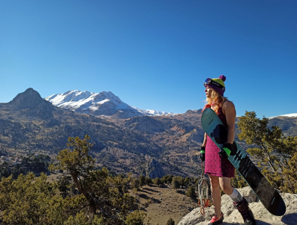

Освіта
Національний Університет фізичного виховання та спорту України
Спеціальність "Фізична реабілітація"
Національний Університет фізичного виховання та спорту України
Спеціальність "Фізична реабілітація"
Скелелазіння - 9 років досвіду роботи на скеледромах та скелях
Сноубординг - 5 зимових сезонів роботи інструктором у горах Грузіі та України
Тренажерна зала - 12 років роботи в напрямку "функціональний тренінг" та TRX
Мої тренування - 14 років власних тренувань у різних напрямках: силовий тренінг, TRX, сноубординг, скелелазіння, стретчінг, пілатес, функціональний тренінг
| No. | Тренування | Тривалість | Вартість |
|---|---|---|---|
| 1 | Індивідуальне тренування | 60 хв. | 600 грн. |
| 2 | Групове тренування | 120 хв. | 400 грн/людина. |
| 3 | Спліт-тренування | 90 хв. | 500 грн./людина |
| 4 | Виїздні тренування | від 1 дня | від 1500 грн./людина |
Мій особистий досвід лазіння в різних скельних туфлях та мої улюбленці